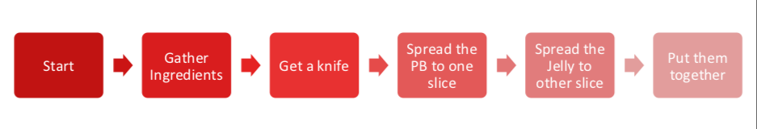

Repetition Structures
The action of doing something over and over again (repetition) is called a loop - the name becomes apparent when we examine a flowchart representation of repetition. Loops repeat a portion of code a finite number of times until a process is complete. Repetitive tasks are very common and essential in programming. They save time in coding, minimize coding errors, and leverage the speed of electronic computation.
Loop Analogs
If you think any mass manufacturing process, we apply the same process again and again. Even for something very simple such as preparing a peanut butter sandwich:
Consider the flowchart in Figure 1, it represents a decomposition of sandwich assembly, but at a high level -- for instance, Gather Ingredients contains a lot of substeps that would need to be decomposed if fully automated assembly were to be accomplished; nevertheless lets stipulate that this flowchart will indeed construct a single sandwich.

| Figure 1 | Supervisory Flowchart Sandwich Assembly (adapted from http://www.str-tn.org/subway_restaurant_training_manual.pdf) | |
|---|---|---|
If we need to make 1000 peanut butter sandwichs we would then issue a directive to:
1) Implement sandwich assembly, repeat 999 times (repeat is the loop structure) (A serial structure, 1 sandwich artist, doing same job over and over again)
OR
2) Implement 1000 sandwich assembly threads (A parallel structure, 1000 sandwich artists doing same job once)
In general because we dont want to idle 999 sandwich artists, we would choose the serial structure, which frees 999 people to ask the existential question "would you like fries with that?"
All cynicism aside, an automated process such as a loop, is typical in computational processing.
Aside NVIDIA CUDA, and AMD OpenGL compilers can detect the structure above, and if there are enough GPU threads available , create the 1000 sandwich artists (1000 GPU threads), and run the process in parallel -- the actual workload is unchanged in a thermodynamic sense, but the apparent time (in human terms) spent in sandwich creation is a fraction of the serial approach. This parallelization is called unrolling the loop, and is a pretty common optimization step during compilation. This kind of programming is outside the scope of this class.
Main attractiveness of loops is:
- Leveraging pattern matching and automation
- Code is more organized and shorter,because a loop is a sequence of instructions that is continually repeated until a certain condition is reached.
There are 2 main types loops based on the repetition control condition; for loops and whileloops.
Count controlled repetition for loop structure)
Count-controlled repetition is also called definite repetition because the number of repetitions is known before the loop begins executing.
When we do not know in advance the number of times we want to execute a statement, we cannot use count-controlled repetition (while structure discussed later).
In such an instance, we would use sentinel-controlled repetition.
A count-controlled repetition will exit after running a certain number of times. The count is kept in a variable called an index or counter. When the index reaches a certain value (the loop bound) the loop will end.
Count-controlled repetition requires
- control variable (or loop counter)
- initial value of the control variable
- increment (or decrement) by which the control variable is modified each iteration through the loop
- condition that tests for the final value of the control variable
We can use both for and while loops, for count controlled repetition, but the for loop in combination with the range() function is more common.
Structured FOR loop
We have seen the for loop already, but we will formally introduce it here. The for loop executes a block of code repeatedly until the condition in the for statement is no longer true.
Looping through an iterable
An iterable is anything that can be looped over - typically a list, string, or tuple. The syntax for looping through an iterable is illustrated by an example.
First a generic syntax
for a in iterable:
print(a)
Notice our friends the colon : and the indentation.
The range() function to create an iterable
The range(begin,end,increment) function will create an iterable starting at a value of begin, in steps defined by increment (begin += increment), ending at end.
So a generic syntax becomes
for a in range(begin,end,increment):
print(a)
The examples that follow are count-controlled repetition (increment skip if greater)
Example for loops
# sum numbers from 1 to n
howmany = int(input('Enter N'))
accumulator = 0.0
for i in range(1,howmany+1,1):
accumulator = accumulator + float(i)
print( 'Sum from 1 to ',howmany, 'is %.3f' % accumulator )
Enter N 9
Sum from 1 to 9 is 45.000
# sum even numbers from 1 to n
howmany = int(input('Enter N'))
accumulator = 0.0
for i in range(1,howmany+1,1):
if i%2 == 0:
accumulator = accumulator + float(i)
print( 'Sum of Evens from 1 to ',howmany, 'is %.3f' % accumulator )
Enter N 9
Sum of Evens from 1 to 9 is 20.000
howmany = int(input('Enter N'))
linetoprint=''
for i in range(1,howmany+1,1):
linetoprint=linetoprint + '*'
print(linetoprint)
Enter N 9
*
**
***
****
*****
******
*******
********
*********
Nested Repetition
Nested repetition is when a control structure is placed inside of the body or main part of another control structure.
break to exit out of a loop
Sometimes you may want to exit the loop when a certain condition different from the counting condition is met. Perhaps you are looping through a list and want to exit when you find the first element in the list that matches some criterion. The break keyword is useful for such an operation.
For example run the following program:
#
j = 0
for i in range(0,9,1):
j += 2
print ("i = ",i,"j = ",j)
if j == 6:
break
i = 0 j = 2
i = 1 j = 4
i = 2 j = 6
j = 0
for i in range(0,5,1):
j += 2
print( "i = ",i,"j = ",j)
if j == 7:
break
i = 0 j = 2
i = 1 j = 4
i = 2 j = 6
i = 3 j = 8
i = 4 j = 10
In the first case, the for loop only executes 3 times before the condition j == 6 is TRUE and the loop is exited. In the second case, j == 7 never happens so the loop completes all its anticipated traverses.
In both cases an if statement was used within a for loop. Such "mixed" control structures
are quite common (and pretty necessary).
A while loop contained within a for loop, with several if statements would be very common and such a structure is called nested control.
There is typically an upper limit to nesting but the limit is pretty large - easily in the
hundreds. It depends on the language and the system architecture ; suffice to say it is not
a practical limit except possibly for general-domain AI applications.
We can also do mundane activities and leverage loops, arithmetic, and format codes to make useful tables like
import math # package that contains cosine
print(" Cosines ")
print(" x ","|"," cos(x) ")
print("--------|--------")
for i in range(0,157,1):
x = float(i)*0.1
print("%.3f" % x, " |", " %.4f " % math.cos(x)) # note the format code and the placeholder % and syntax
Cosines
x | cos(x)
--------|--------
0.000 | 1.0000
0.100 | 0.9950
0.200 | 0.9801
0.300 | 0.9553
0.400 | 0.9211
0.500 | 0.8776
0.600 | 0.8253
0.700 | 0.7648
0.800 | 0.6967
0.900 | 0.6216
1.000 | 0.5403
1.100 | 0.4536
1.200 | 0.3624
1.300 | 0.2675
1.400 | 0.1700
1.500 | 0.0707
1.600 | -0.0292
1.700 | -0.1288
1.800 | -0.2272
1.900 | -0.3233
2.000 | -0.4161
2.100 | -0.5048
2.200 | -0.5885
2.300 | -0.6663
2.400 | -0.7374
2.500 | -0.8011
2.600 | -0.8569
2.700 | -0.9041
2.800 | -0.9422
2.900 | -0.9710
3.000 | -0.9900
3.100 | -0.9991
3.200 | -0.9983
3.300 | -0.9875
3.400 | -0.9668
3.500 | -0.9365
3.600 | -0.8968
3.700 | -0.8481
3.800 | -0.7910
3.900 | -0.7259
4.000 | -0.6536
4.100 | -0.5748
4.200 | -0.4903
4.300 | -0.4008
4.400 | -0.3073
4.500 | -0.2108
4.600 | -0.1122
4.700 | -0.0124
4.800 | 0.0875
4.900 | 0.1865
5.000 | 0.2837
5.100 | 0.3780
5.200 | 0.4685
5.300 | 0.5544
5.400 | 0.6347
5.500 | 0.7087
5.600 | 0.7756
5.700 | 0.8347
5.800 | 0.8855
5.900 | 0.9275
6.000 | 0.9602
6.100 | 0.9833
6.200 | 0.9965
6.300 | 0.9999
6.400 | 0.9932
6.500 | 0.9766
6.600 | 0.9502
6.700 | 0.9144
6.800 | 0.8694
6.900 | 0.8157
7.000 | 0.7539
7.100 | 0.6845
7.200 | 0.6084
7.300 | 0.5261
7.400 | 0.4385
7.500 | 0.3466
7.600 | 0.2513
7.700 | 0.1534
7.800 | 0.0540
7.900 | -0.0460
8.000 | -0.1455
8.100 | -0.2435
8.200 | -0.3392
8.300 | -0.4314
8.400 | -0.5193
8.500 | -0.6020
8.600 | -0.6787
8.700 | -0.7486
8.800 | -0.8111
8.900 | -0.8654
9.000 | -0.9111
9.100 | -0.9477
9.200 | -0.9748
9.300 | -0.9922
9.400 | -0.9997
9.500 | -0.9972
9.600 | -0.9847
9.700 | -0.9624
9.800 | -0.9304
9.900 | -0.8892
10.000 | -0.8391
10.100 | -0.7806
10.200 | -0.7143
10.300 | -0.6408
10.400 | -0.5610
10.500 | -0.4755
10.600 | -0.3853
10.700 | -0.2913
10.800 | -0.1943
10.900 | -0.0954
11.000 | 0.0044
11.100 | 0.1042
11.200 | 0.2030
11.300 | 0.2997
11.400 | 0.3935
11.500 | 0.4833
11.600 | 0.5683
11.700 | 0.6476
11.800 | 0.7204
11.900 | 0.7861
12.000 | 0.8439
12.100 | 0.8932
12.200 | 0.9336
12.300 | 0.9647
12.400 | 0.9862
12.500 | 0.9978
12.600 | 0.9994
12.700 | 0.9911
12.800 | 0.9728
12.900 | 0.9449
13.000 | 0.9074
13.100 | 0.8610
13.200 | 0.8059
13.300 | 0.7427
13.400 | 0.6722
13.500 | 0.5949
13.600 | 0.5117
13.700 | 0.4234
13.800 | 0.3308
13.900 | 0.2349
14.000 | 0.1367
14.100 | 0.0372
14.200 | -0.0628
14.300 | -0.1621
14.400 | -0.2598
14.500 | -0.3549
14.600 | -0.4465
14.700 | -0.5336
14.800 | -0.6154
14.900 | -0.6910
15.000 | -0.7597
15.100 | -0.8208
15.200 | -0.8737
15.300 | -0.9179
15.400 | -0.9530
15.500 | -0.9785
15.600 | -0.9942
The continue statement
The continue instruction skips the block of code after it is executed for that iteration. It is best illustrated by an example.
j = 0
for i in range(0,5,1):
j += 2
print ("\n i = ", i , ", j = ", j) #here the \n is a newline command
if j == 6:
continue
print(" this message will be skipped over if j = 6 ") # still within the loop, so the skip is implemented
i = 0 , j = 2
this message will be skipped over if j = 6
i = 1 , j = 4
this message will be skipped over if j = 6
i = 2 , j = 6
i = 3 , j = 8
this message will be skipped over if j = 6
i = 4 , j = 10
this message will be skipped over if j = 6
Readings
-
Learn Python in One Day and Learn It Well. Python for Beginners with Hands-on Project. (Learn Coding Fast with Hands-On Project Book -- Kindle Edition by LCF Publishing (Author), Jamie Chan https://www.amazon.com/Python-2nd-Beginners-Hands-Project-ebook/dp/B071Z2Q6TQ/ref=sr_1_3?dchild=1&keywords=learn+python+in+a+day&qid=1611108340&sr=8-3
-
Learn Python the Hard Way (Online Book) (https://learnpythonthehardway.org/book/) Recommended for beginners who want a complete course in programming with Python.
-
How to Learn Python for Data Science, The Self-Starter Way (https://elitedatascience.com/learn-python-for-data-science)
-
Flowcharts (QA/QC Perspective) https://asq.org/quality-resources/flowchart
-
Flowcharts - Wikipedia https://en.wikipedia.org/wiki/Flowchart
-
Psuedocode - Wikipedia https://en.wikipedia.org/wiki/Pseudocode